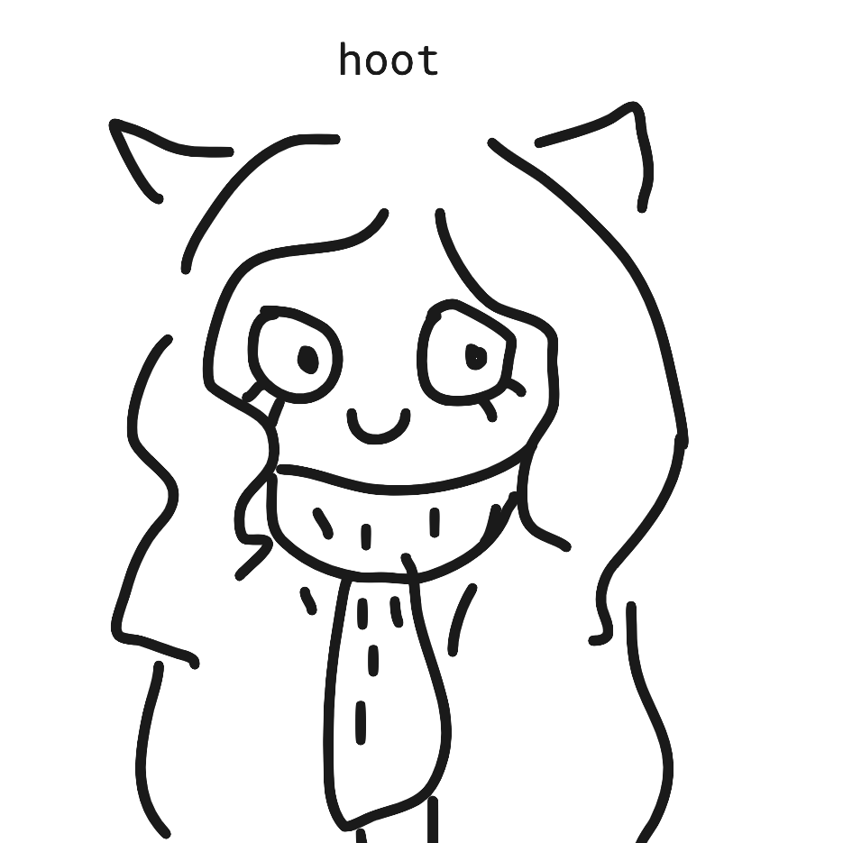
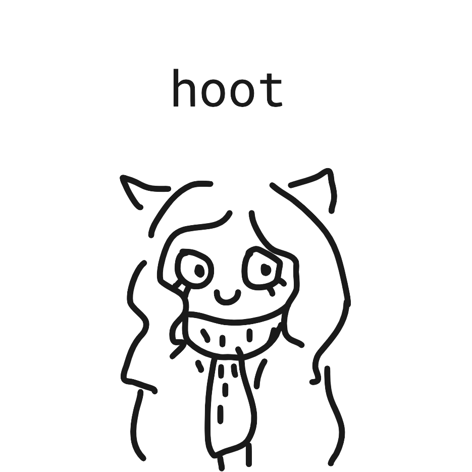
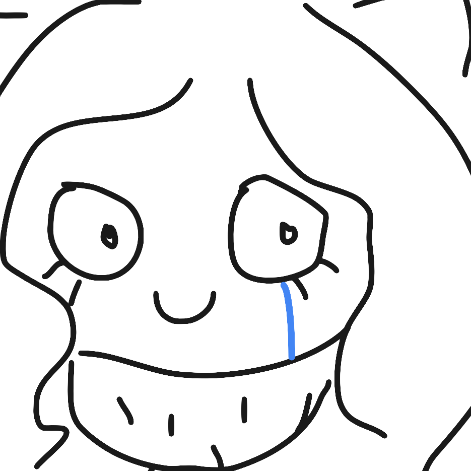

pauline likes to sleep.
by: pauline
date posted:
pauline really loves to sleep.
in fact, she likes to sleep so much she will end this blog post to sleep more. good night.
date posted:
pauline really loves to sleep.
in fact, she likes to sleep so much she will end this blog post to sleep more. good night.
date posted:
pauline is a night owl, but she doesn't want to be. she just ends up staying up too late to work.
besides, she always wakes up too late.
pauline wants to make better life choices.
why doesn't she?
☞ back to top ☜date posted:
why is pauline blogging in the third person?
well, that's because pauline likes consistency. but only in certain things.
for example, this website mockup.
now you know why.